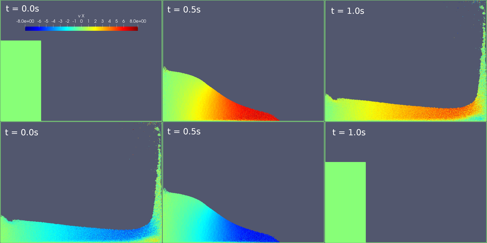

8: Water collapse (explicit, symplectic, and reversible)
Simulation of a water column collapsing under its own weight onto dry bottom. Here we use a symplectic scheme and get a reversible simulation. At the end of the simulation, the velocities are reverted and the simulation goes back to its initial conditions. Despite the reversibility, Boltzmann entropy grows and attains its maximum value just before the velocities are reverted.
module collapse_symplectic
using Printf
using SmoothedParticles
using Parameters
using Plots
using DataFrames # to store the csv file
using CSV# to store the csv file
include("utils/FixPA.jl")
include("utils/entropy.jl")
using .FixPA
using .entropy
#using ReadVTK #not implemented
#using VTKDataIODeclare constant parameters
##physical
const dr = 1.0e-2 #average particle distance (decrease to make finer simulation)
const h = 3.0*dr #size of kernel support
const rho0 = 1000. #fluid density
const m = rho0*dr^2 #particle mass
const g = -9.8*VECY #gravitational acceleration
const mu = 0.0#8.4e-4 #dynamic viscosity of water
##geometrical
const water_column_width = 1.0
const water_column_height = 2.0
const box_height = 3.0
const box_width = 4.0
const wall_width = 2.5*dr
##artificial
const c = 50.0 #numerical speed of sound
const dr_wall = 0.95*dr
const E_wall = 10*norm(g)*water_column_height
const eps = 1e-16
##temporal
const dt = 0.1*h/c
const t_end = 1.0
const dt_frame = t_end/100
##particle types
const FLUID = 0.
const WALL = 1.
@with_kw mutable struct Particle <: AbstractParticle
x::RealVector #position
v::RealVector = VEC0 #velocity
a::RealVector = VEC0 #acceleration
P::Float64 = 0. #pressure
rho::Float64 = 0. #density
rho0::Float64 = 0.
type::Float64 #particle_type
endDefine geometry and make particles
function make_system()
grid = Grid(dr, :square)
box = Rectangle(0., 0., box_width, box_height)
fluid = Rectangle(0., 0., water_column_width, water_column_height)
walls = BoundaryLayer(box, grid, wall_width)
#walls = Specification(walls, x -> (x[2] < box_height))
domain = Rectangle(-box_width, -box_width, 2*box_width, 3*box_height)
sys = ParticleSystem(Particle, domain, h)
generate_particles!(sys, grid, fluid, x -> Particle(x = x, type = FLUID))
generate_particles!(sys, grid, walls, x -> Particle(x = x, type = WALL))
return sys
endDefine particle interactions
@inbounds function find_rho!(p::Particle, q::Particle, r::Float64)
if p.type == FLUID && q.type == FLUID
p.rho += m*wendland2(h,r)
end
end
@inbounds function find_rho0!(p::Particle, q::Particle, r::Float64)
if p.type == FLUID && q.type == FLUID
p.rho0 += m*wendland2(h,r)
end
end
function find_pressure!(p::Particle)
p.P = c^2*(p.rho - p.rho0)
end
@inbounds function internal_force!(p::Particle, q::Particle, r::Float64)
if p.type == FLUID && q.type == FLUID
ker = m*rDwendland2(h,r)
p.a += -ker*(p.P/rho0^2 + q.P/rho0^2)*(p.x - q.x)
#p.a += +2*ker*mu/rho0^2*(p.v - q.v)
elseif p.type == FLUID && q.type == WALL && r < dr_wall
s = dr_wall/(r + eps)
p.a += -E_wall/(r + eps)^2*(s^2 - s^4)*(p.x - q.x)
end
end
function reset_a!(p::Particle)
p.a = zero(RealVector)
end
function reset_rho!(p::Particle)
p.rho = 0.0
end
function move!(p::Particle)
if p.type == FLUID
p.x = rev_add(p.x, dt*p.v)
end
end
function accelerate!(p::Particle)
if p.type == FLUID
p.v = rev_add(p.v, 0.5*dt*(p.a + g))
end
end
function LJ_potential(p::Particle, q::Particle, r::Float64)::Float64
if q.type == WALL && p.type == FLUID && r < dr_wall
s = dr_wall/(r + eps)
return m*E_wall*(0.5s^2 - 0.25s^4 -0.25)
else
return 0.0
end
end
function energy_kinetic(sys::ParticleSystem)::Float64
return sum(p -> 0.5*m*dot(p.v, p.v), sys.particles)
end
function energy(sys::ParticleSystem, p::Particle)::Float64
kinetic = 0.5*m*dot(p.v, p.v)
internal = 0.5*m*c^2*(p.rho - p.rho0)^2/rho0^2
gravity_potential = -m*dot(g, p.x)
wall_potential = SmoothedParticles.sum(sys, LJ_potential, p)
return kinetic + internal + gravity_potential + wall_potential
endPut everything into a time loop
function verlet_step!(sys::ParticleSystem)
apply!(sys, accelerate!)
apply!(sys, move!)
create_cell_list!(sys)
apply!(sys, reset_rho!)
apply!(sys, find_rho!, self = true)
apply!(sys, find_pressure!)
apply!(sys, reset_a!)
apply!(sys, internal_force!)
apply!(sys, accelerate!)
end
function save_results!(out::SmoothedParticles.DataStorage, sys::ParticleSystem, k::Int64)
if (k % Int64(round(dt_frame/dt)) == 0)
@printf("t = %.6e\n", k*dt)
#energy
E = sum(p -> energy(sys,p), sys.particles)
@show E
println("# of part. = ", length(sys.particles))
println()
save_frame!(out, sys, :v, :a, :P, :rho, :rho0)
end
end
function main(;revert = true) #if revert=true, velocities are inverted at the end of the simulation and the simulation then goes backward
sys = make_system()
out = new_pvd_file("results/collapse_fixpa")
#initialization
create_cell_list!(sys)
apply!(sys, find_rho0!, self = true)
apply!(sys, find_rho!, self = true)
apply!(sys, find_pressure!)
apply!(sys, internal_force!)
N_of_particles = length(sys.particles)
@show(N_of_particles)
@show(m)
step_final = Int64(round(t_end/dt))
times = Float64[] #time instants
Ss = Float64[] # Entropy values
Ekin = Float64[] # Kinetic energy values
for k = 0 : step_final
verlet_step!(sys)
save_results!(out, sys, k)
if k % round(step_final/100) == 0 # store a number of entropy values
distr = velocity_histogram(sys, N = 100)
S = entropy_2D_MB(distr)
push!(times, k*dt)
push!(Ss, S)
push!(Ekin, energy_kinetic(sys))
@show(S)
println()
end
endPlotting the velocity distribution in comparison with Maxwell-Boltzmann
T = plot_velocity_distr(sys, m, "energy_distribution_middle.pdf")Plotting the entropy in time
Sred_eq_E = [(1+log(Ekin[k]/(m*length(sys.particles)))) for k in 1:length(Ss)]
Sred_eq_T= (1+log(kB*T/m))*ones(Float64, length(Ss))
p = plot(times, [Ss Sred_eq_T Sred_eq_E], label = ["entropy" "S_eq(T)" "S_eq(E)"],legend=:bottomright)
savefig(p, "entropy_middle.pdf")
df = DataFrame(time_steps = times, S_Boltzmann = Ss, S_eq_T = Sred_eq_T, S_eq_E = Sred_eq_E)
CSV.write("entropy_middle.csv", df)
if revert
#revert velocities
println("--------------------")
println("Reverting velocities")
println("--------------------")
for p in sys.particles
p.v = -p.v
end
Ss_rev = Float64[]
for k = step_final:-1:0
verlet_step!(sys)
save_results!(out, sys, k)
if k % round(step_final/100) == 0 # store a number of entropy values
distr = velocity_histogram(sys, v_max = sqrt(2*norm(g)*water_column_height), N = 100)
S = entropy_2D_MB(distr)
push!(Ss_rev, S)
@show(S)
println()
end
end
plot_velocity_distr(sys, m, "energy_distribution_final.pdf")Plotting the entropy in time
p = plot(times, [Ss Ss_rev Sred_eq_T Sred_eq_E], label = ["entropy forward" "entropy backward" "S_eq(T)" "S_eq(E)"], legend=:bottomright)
savefig(p, "entropy_final.pdf")
df = DataFrame(time_steps = times, S_Boltzmann = Ss, S_eq_T = Sred_eq_T, S_eq_E = Sred_eq_E)
CSV.write("entropy_final.csv", df)
end
save_pvd_file(out)
end ## function main
end ## moduleThis page was generated using Literate.jl.